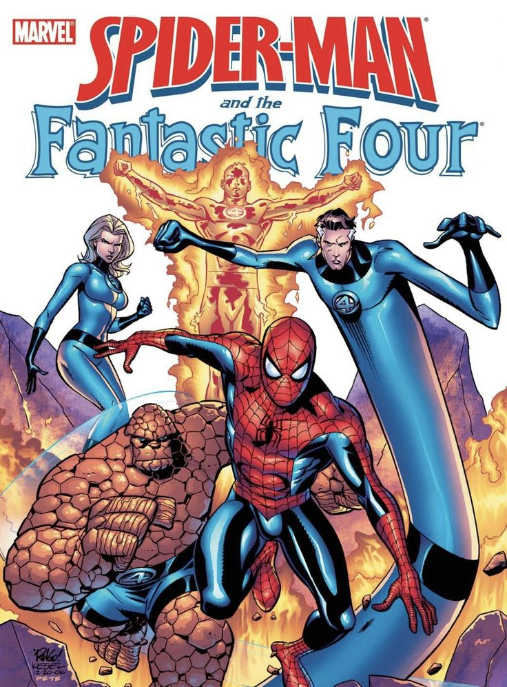

Spider-Man rechazó unirse a los Cuatro Fantásticos
En su primera aparición en The Amazing Spider-Man #1 (1963), Peter Parker buscaba unirse a los Cuatro Fantásticos, con la esperanza de obtener una fuente de ingresos estable para ayudar a su tía May. Sin embargo, al presentarse en el edificio Baxter y enfrentarse brevemente al equipo, se dio cuenta de que los Cuatro Fantásticos no cobraban por sus servicios, algo que frustró sus planes.
Esta historia refleja el lado más humano de Spider-Man, que siempre ha sido un personaje motivado por la responsabilidad, pero también por la necesidad. A diferencia de otros héroes respaldados por riqueza o instituciones, Peter es un joven con problemas reales, lo que conecta con generaciones de lectores.
El hecho de que Spider-Man no se uniera al equipo también sirvió para destacar su individualismo. Aunque ha colaborado muchas veces con ellos desde entonces, este momento dejó claro que su camino sería muy distinto: más solitario, lleno de sacrificios personales y decisiones difíciles.
← Volver a curiosidades de Marvel